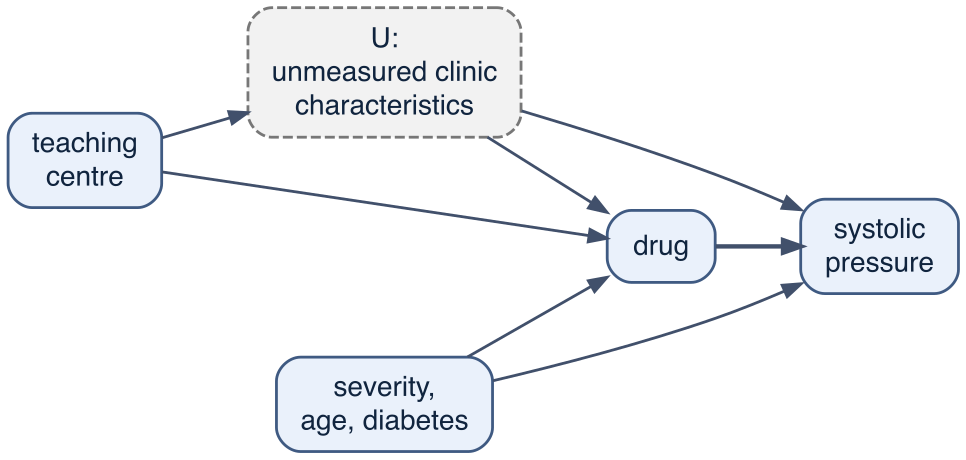
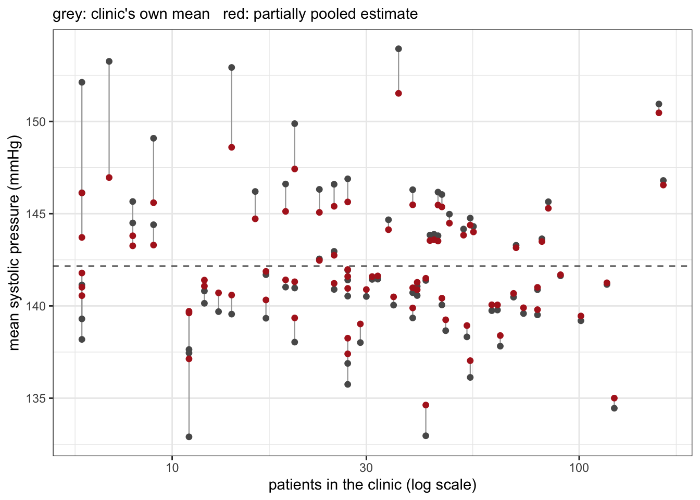
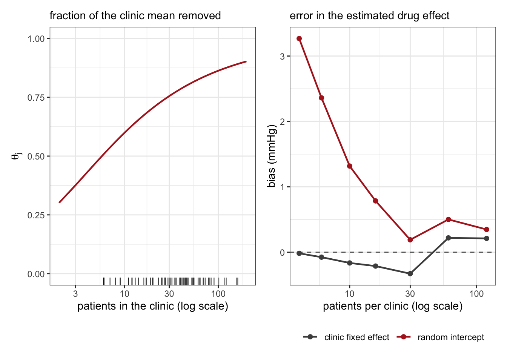
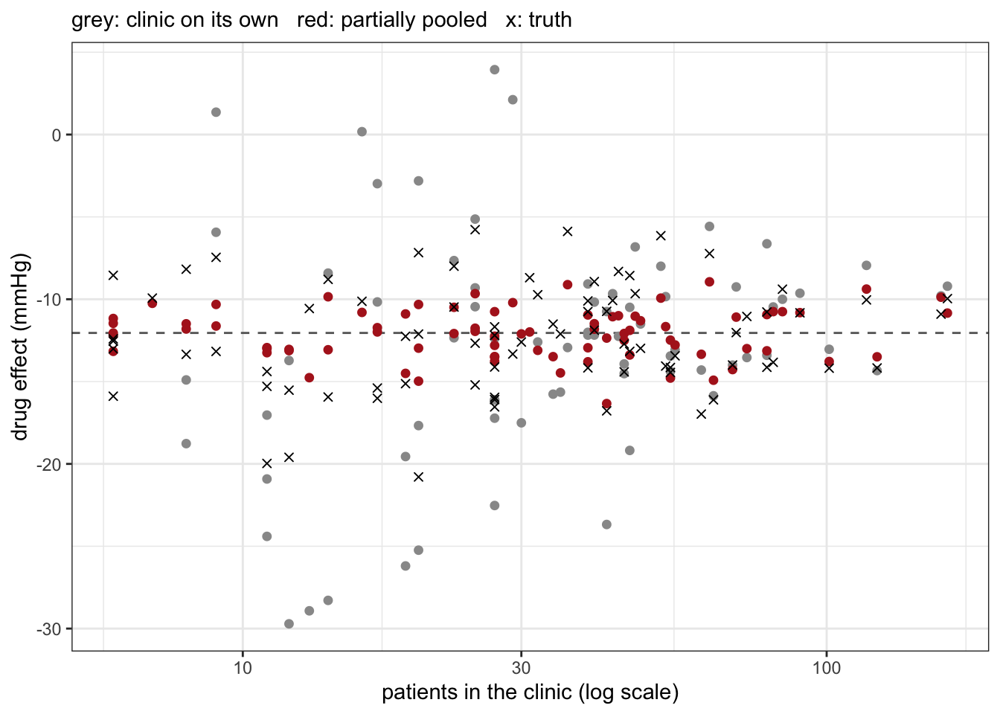

| Quantity | Value |
|---|---|
| Patients | 3,211 |
| Clinics | 80 |
| Clinic size: smallest / median / largest | 6 / 31.5 / 161 |
| Teaching clinics | 30 of 80 |
| Clinic prescribing rate: lowest / median / highest | 0.00 / 0.58 / 0.96 |
| Clinics with no within-clinic variation in treatment | 1 |
| True average effect of the drug on SBP (mmHg) | -12.05 |
28 Multilevel models
Patients are not sampled one at a time from a single population. They arrive through clinics, wards, practices, hospitals, regions; measurements are repeated for a patient; laboratory results come in batches. Each of these is a grouping structure, and each raises the same technical question: simple models assume observations are independent given the predictors, which the observations within the same group generally are not.
The standard answer is a multilevel model, which gives each group its own intercept and treats those intercepts as draws from a distribution whose spread is itself estimated from the data. This chapter is about these models and of the questions one can ask of grouped data. Three such questions run through the chapter:
- How high is blood pressure at clinic C07? A descriptive question about the groups. Multilevel modelling improves the answer, particularly for small clinics.
- Does the drug lower blood pressure? A causal question in which the clinic is at best a nuisance and at worst a confounder. Here the multilevel model’s characteristic effect – partial pooling – is beside the point, and the default specification returns a biased answer for a reason that has nothing to do with pooling.
- Does the drug work equally well everywhere? A causal question in which the between-clinic variation is the object of interest rather than an obstacle. This is what varying slopes estimate.
The second question is where the literature is thinnest and where a model that fits well can still be wrong.
28.1 Clusters in the cohort
The master cohort of the preceding chapters has no grouping structure, so this chapter works with a clustered version of the same data generating process, defined in R/simulate_clinics.R. The patient-level structure is unchanged – age, diabetes, severity, prescribing driven by severity, and a drug that lowers systolic pressure – and a clinic level is added on top.
Table 28.1 summarises it. Three features of the clinic level matter.
Clinics differ in how much they prescribe. The prescribing rate ranges from 0.00 to 0.96. Some of this is case-mix – a clinic with sicker patients treats more of them – but most is local practice.
Clinics differ in their patients’ blood pressure for reasons not in the data. Measurement habits, the local population, the quality of routine care. Call this \(u_j\). It is unmeasured, and no covariate in the data set stands in for it.
These two differences are correlated. In this simulation the correlation is 0.9: clinics that prescribe heavily are also clinics whose patients have higher pressure to begin with. That correlation is what turns the clinic from a nuisance into a confounder, because it opens a back-door path from treatment to outcome that runs through the clinic (Figure 28.1).

The simulation is counterfactual, so the true effect of the drug on pressure is known for every patient: -12.05 mmHg on average, varying from -20.8 to -5.8 mmHg across clinics. Every estimate below can be scored against that.
28.2 Complete pooling, no pooling, partial pooling
Start with the descriptive question with no causal content: what is the mean systolic blood pressure at each clinic? Three models are available, which differ in how much they let one clinic’s data inform another’s estimate.
Complete pooling ignores the grouping and fits one mean to everybody, \(y_i \sim \text{Normal}(\alpha, \sigma)\), in brms sbp ~ 1. Every clinic gets the same answer, which is right only if the clinics are identical in their patients bp.
No pooling gives each clinic its own mean and lets nothing cross between them, \(y_i \sim \text{Normal}(\alpha_{j[i]}, \sigma)\), in brms sbp ~ 0 + clinic. Here \(j[i]\) denotes the clinic of patient \(i\). This is right if knowing what happens at 79 clinics tells you nothing about the eightieth, and it leaves the smallest clinic – 6 patients – with an estimate built from 6 measurements. It is also the best and simplest model when all clinics provide us with enough data to answer our question to the required precision. Then there is no practical reason to complicate matters by cross-utilising data from different clinics to get a separate estimate for each clinic.
Partial pooling places a prior distribution over the clinic means and estimates its spread from the data:
\[y_i \sim \text{Normal}(\alpha + \alpha_{j[i]},\ \sigma_y), \qquad \alpha_j \sim \text{Normal}(0, \sigma_\alpha)\]
which in brms is sbp ~ 1 + (1 | clinic). The first expression states that there is an average bp \(\alpha\) and, for each clinic, a deviation from it, \(\alpha_{j[i]}\), so that \(\alpha + \alpha_{j[i]}\) gives the mean bp for each clinic and \(\alpha\) gives the overall mean bp. The \(\sigma\) denotes the patient-level variation (SD) in bp that is modelled to be identical in all clinics. The second expression gives the model a two-level structure by putting a prior on the clinic deviations in mean bp. Crucially, it is a prior with a parameter, \(\sigma_\alpha\), that is not fixed by user, but estimated from the data alongside all other parameters of the model. It is an adaptive prior, i.e. its shape adapts to data. Thanks to this adaptive multi-level structure, information flows from each clinic up into \(\sigma_\alpha\) and back down into every other clinic’s estimate.1
The two single-level models are the limiting cases: as \(\sigma_\alpha \to \infty\) the adaptive prior is flat and partial pooling becomes no pooling; as \(\sigma_\alpha \to 0\) every deviation is forced to zero and it becomes complete pooling. Because \(\sigma_\alpha\) is estimated rather than assumed, the multilevel model chooses where between the two extremes to sit, and it can reproduce either if the data ask for it.

Figure 28.2 shows the result. Every clinic’s estimate is pulled toward the population mean, and the pull is a decreasing function of clinic size: the smallest clinics move by several mmHg, the largest hardly at all. Nothing about this is arbitrary. For a clinic with \(n_j\) patients the posterior mean is approximately a weighted average of the clinic’s own mean and the population mean, with weight
\[w_j = \frac{n_j / \sigma_y^2}{n_j / \sigma_y^2 + 1/\sigma_\alpha^2} = \frac{n_j}{n_j + \sigma_y^2/\sigma_\alpha^2}\]
on the clinic’s own data. The ratio \(\sigma_y^2/\sigma_\alpha^2\) is the only thing the rest of the data contribute, and it has units of sample size: it is the number of patients whose information the adaptive prior is worth. Here \(\sigma_y\) is 11.08 mmHg and \(\sigma_\alpha\) is 3.66 mmHg, so the prior carries about 9 patients’ worth of information. A clinic with fewer patients than that is pulled more than half the way to the population mean; a clinic with more is pulled less.
Shrinkage is not conservatism
Pulling estimates toward a common value sounds like a hedge, and it is often described as one. It is better understood as an accuracy device. If the clinic means are drawn from a common distribution, then shrunk estimates have lower expected squared error than the raw means – not on average across clinics but, for a sufficient number of groups, uniformly better in total.2 The raw mean of a six-patient clinic is unbiased and nearly useless; the shrunk estimate is biased toward the centre, and also closer to the truth. Which of those two properties you want depends on the question, and for a descriptive or predictive question it is the second.
28.3 What partial pooling does to the intervals
Observations from the same clinic are correlated, and a model that assumes independence treats each patient as a fresh piece of information, which they are not. The strength of that correlation is the intraclass correlation, the share of variance that is between clinics rather than within them:
\[\text{ICC} = \frac{\sigma_\alpha^2}{\sigma_\alpha^2 + \sigma_y^2} = 0.098\]
which is a modest-looking number with a large consequence. For a quantity compared between clusters, the effective sample size is not \(n\) but approximately \(n / [1 + (\bar n - 1)\,\text{ICC}]\), where \(\bar n\) is the average cluster size. The multiplier in the denominator is the design effect. With an average of 40 patients per clinic and an ICC of 0.098, the design effect is about 4.9, so 3,211 patients carry roughly the information of 662 independent ones for that purpose.
In this setting the grouping structure is a nuisance to absorb: the clinic is not of interest, but ignoring it produces intervals that are too narrow, and therefore claims made with more confidence than the data support. It is also why a cluster-randomised trial – one that allocates whole clinics rather than patients – needs its sample size computed from the number of clusters rather than the number of patients, and must be analysed with the clustering in the model.3 In a multicentre trial that randomises patients within centres, centre is a stratification variable and belongs in the analysis for the same reason; with small centres a random centre effect recovers precision that a fixed effect for each centre spends.4
Note that all this is about intervals. Nothing so far gives any reason to think that adding (1 | clinic) moves a point estimate toward a causal truth. The next section is about what happens when it is asked to.
28.4 Cluster-level confounding
Now the causal question: does the drug lower blood pressure and if so, by how much? The answer key says -12.05 mmHg. Five models are fitted, all adjusting for the measured patient-level confounders (severity and age) and differing only in what they do with the clinic. Each effect is reported the way the rest of the book reports effects – as an average marginal contrast from the fitted model rather than as a coefficient.5
| Model | Effect (mmHg) | 95% interval | Error |
|---|---|---|---|
| Complete pooling: no clinic term | -5.19 | [-5.93, -4.41] | 6.86 |
| Clinic as a fixed effect | -12.03 | [-12.85, -11.26] | 0.02 |
| Random intercept for clinic | -11.67 | [-12.43, -10.91] | 0.37 |
| Random intercept plus the clinic prescribing rate (Mundlak) | -12.05 | [-12.82, -11.29] | -0.01 |
| Between clinics only: a regression on the 80 clinic means | 6.69 | [3.47, 9.91] | 18.74 |
Read Table 28.2 from the bottom up.
The between-clinic comparison has the sign wrong. Regressing each clinic’s mean pressure on its prescribing rate – an analysis with 80 observations, one per clinic – says that prescribing raises pressure by 6.69 mmHg. It is a competent analysis of the wrong contrast: clinics that prescribe more have higher pressure, and the direction of that association is set by \(u_j\), not by the drug. This is the ecological fallacy in its exact form, an association between group-level aggregates that need not resemble, and here does not even share a sign with, the individual-level relationship.6
Complete pooling inherits most of that error. With no clinic term the model cannot distinguish the within-clinic contrast from the between-clinic one, and returns a mixture of the two: -5.19 mmHg, well under half the truth, with a 95% interval of [-5.93, -4.41] that excludes it. Adjusting for severity and age was not the problem. There is a second back-door path, it runs through the clinic, and no patient-level covariate blocks it.
Absorbing the clinic fixes it. Both the fixed-effect model and the random intercept land within a few tenths of a mmHg of -12.05. The mechanism is not shrinkage; it is that both models compare treated with untreated patients inside the same clinic, and within a clinic \(u_j\) is a constant and therefore cannot confound. Conditioning on the cluster indicator blocks the cluster-level back-door path in the same way conditioning on any other confounder does.
That is the useful result, but it comes with a warning.
28.5 Where the random intercept’s escape comes from
It is tempting to conclude that (1 | clinic) handles cluster-level confounding. It does not, and the reason it appeared to do so here is a property of our clinic sizes rather than of the model.
A random-intercept model does not condition on the cluster. It estimates the treatment effect from a quasi-demeaned comparison: rather than subtracting each clinic’s mean, as a fixed-effect model effectively does, it subtracts a fraction \(\theta_j\) of it, where
\[\theta_j = 1 - \sqrt{\frac{\sigma_y^2}{\sigma_y^2 + n_j \sigma_\alpha^2}}.\]
When \(\theta_j = 1\) the clinic mean is removed entirely and the estimator is the within-clinic one. When \(\theta_j = 0\) nothing is removed and the estimator is complete pooling. In between, the estimate is a precision-weighted average of the within-clinic and between-clinic contrasts – and the between-clinic contrast, as Table 28.2 shows, is the one with the sign error.7 The weight is a function of \(n_j\): large clusters push \(\theta_j\) toward 1 and the leak toward zero.

Figure 28.3 makes the dependence concrete. At the clinic sizes in this cohort (the rug marks on the left panel) \(\theta_j\) runs from 0.51 in the smallest clinic to 0.89 in the largest, with a median of 0.76. A quarter of the typical clinic’s mean therefore survives the demeaning, and yet the bias in Table 28.2 is only 0.37 mmHg. Two things keep it small. The between-clinic contrast enters with a weight that goes as \((1-\theta_j)^2\), which at the median \(\theta\) here is about 0.06; and it is diluted again by the fact that most of the variation in treatment in this cohort is within clinics rather than between them. The leak is about 2% of the 18 mmHg gap between the within- and between-clinic contrasts. Neither of those protections is guaranteed. Shrink the clinics to four or six patients each – sibling pairs, general practices, small wards, neighbourhoods in a survey – and the same model, on data generated by the same process, is biased by several mmHg while the fixed-effect estimator is not. Standard use of a mixed model with small clusters does not adjust for confounding by cluster.8
Three things follow.
- A random intercept is a variance model, not an identification strategy. It is designed to describe correlated errors. Whether it also removes cluster-level confounding is incidental, depends on cluster size, and is not something the model reports.
- Nothing in the fit diagnoses the problem. The random-intercept model in Table 28.2 converges cleanly and beats the complete-pooling model on
looby 563 in elpd against a standard error of 30 – decisive, and silent on which estimate is nearer the causal truth. Predictive fit ranks models on prediction and cannot rank adjustment sets (Chapter 26). - The assumption being made is that the clinic effect \(\alpha_j\) is independent of the covariates in the model. It is the assumption Figure 28.1 violates.
28.6 Within and between: the Mundlak decomposition
The fixed-effect model gets the right answer and pays for it. Absorbing 80 clinic indicators discards all between-clinic information, so no clinic-level covariate can be estimated – teaching is collinear with the clinic indicators and drops out – and clinics with no within-clinic variation in treatment contribute nothing. It also has nothing to say about the clinics themselves.
There is a way to keep the multilevel structure and still identify the within-clinic effect: put each clinic’s prescribing rate in the model alongside the patient’s treatment.
\[\text{sbp}_i = \beta_0 + \beta_w\,\text{drug}_i + \beta_c\,\overline{\text{drug}}_{j[i]} + \boldsymbol{\beta}^\top \mathbf{x}_i + \alpha_{j[i]} + \varepsilon_i\]
In brms, sbp ~ drug + drug_bar + severity + age_c + (1 | clinic). This is the Mundlak device.9 Adding the cluster mean of the exposure frees the coefficient on the exposure itself to be the purely within-cluster effect, so a random-effects model reproduces the fixed-effects estimate while remaining a random-effects model.
The equation term by term
- \(\text{sbp}_i\) is the systolic blood pressure outcome of patient \(i\), one row of the data set, \(i = 1, \ldots, 3,211\).
- \(j[i]\) is the clinic of patient \(i\), the notation introduced for the no-pooling model above. It is what connects the two levels: it states which of the 80 clinic-level values to read off for a given patient-level row.
- \(\beta_0\) is the intercept – the \(\alpha\) of the partial-pooling model above, renamed to match the regression notation. It carries the average level of the outcome, which is what allows the clinic deviations to be given a mean of zero.
- \(\beta_w\,\text{drug}_i\) is the patient’s own treatment, 0 or 1. It varies both within clinics and between them.
- \(\beta_c\,\overline{\text{drug}}_{j[i]}\) is the clinic’s prescribing rate: the proportion of that clinic’s patients on the drug, computed in the setup chunk as
ave(clinics$drug, clinics$clinic). It is a clinic-level variable copied onto each of that clinic’s patient rows, so it has no within-clinic variation at all. Table 28.1 gives its range here. - \(\boldsymbol{\beta}^\top \mathbf{x}_i\) collects the remaining patient-level covariates in vector notation, to avoid writing one term per covariate: \(\mathbf{x}_i = (\text{severity}_i,\ \text{age\_c}_i)^\top\), and the term is \(\beta_{\text{sev}}\,\text{severity}_i + \beta_{\text{age}}\,\text{age\_c}_i\).
- \(\alpha_{j[i]}\) is the clinic’s own deviation from \(\beta_0\): one number per clinic, shared by every patient in it, averaging zero across clinics.
- \(\varepsilon_i\) is the patient-level residual, what is left of a patient’s sbp once the clinic and the covariates are accounted for.
Two features of the notation carry more weight than they appear to. The subscripts divide the right-hand side into terms that change from patient to patient (\(\text{drug}_i\), \(\mathbf{x}_i\), \(\varepsilon_i\)) and terms that are constant inside a clinic (\(\overline{\text{drug}}_{j[i]}\), \(\alpha_{j[i]}\)); the identification argument below turns on that division. And the equation states the mean structure only. It does not say what distribution \(\varepsilon_i\) has, and it does not say what distribution the \(\alpha_j\) have. Without the second of those there is no multilevel model, only 80 unrelated intercepts, which is the no-pooling model.
28.6.1 Why the clinic’s prescription rate makes \(\beta_w\) a within-clinic effect
Split each patient’s treatment into the clinic’s rate and the patient’s departure from it:
\[\text{drug}_i = \overline{\text{drug}}_{j[i]} + \underbrace{\bigl(\text{drug}_i - \overline{\text{drug}}_{j[i]}\bigr)}_{\text{within-clinic deviation}}\]
Substituting this into the equation and collecting terms,
\[\beta_w\,\text{drug}_i + \beta_c\,\overline{\text{drug}}_{j[i]} = \beta_w\bigl(\text{drug}_i - \overline{\text{drug}}_{j[i]}\bigr) + (\beta_w + \beta_c)\,\overline{\text{drug}}_{j[i]}\]
so the model is a re-parametrisation of one in which the within-clinic deviation and the clinic rate enter as separate predictors. Fitting sbp ~ drug_w + drug_bar + severity + age_c + (1 | clinic) – the column drug_w is constructed in the setup chunk – gives the same likelihood and the same \(\beta_w\); only the second coefficient changes meaning, from \(\beta_c\) to \(\beta_w + \beta_c\), the between-clinic slope in the third row of Table 28.3.
Written that way, \(\beta_w\) multiplies a variable whose mean is zero in every clinic, and such a variable is uncorrelated with every clinic-level quantity, measured or not, including \(u_j\). That is the identification argument: with the clinic’s rate in the model, \(\beta_w\) is estimated from contrasts internal to clinics, and no clinic-level confounder can enter it. It is the same argument as the fixed-effect model’s, reached without spending 79 coefficients on clinic indicators. teaching and any other clinic-level covariate remain estimable, and clinics with no within-clinic variation in treatment, which contribute nothing to the fixed-effect estimate, still inform \(\beta_c\), \(\sigma_\alpha\) and the covariate coefficients.
One condition is easy to miss. Mundlak’s result – that the random-effects estimate of the within coefficient equals the fixed-effect estimate – requires the cluster means of all patient-level covariates in the model, not only the exposure’s. The specification fitted here carries drug_bar alone. Adding sev_bar and age_bar reproduces the fixed-effect estimate to numerical precision (-12.090 against -12.090 mmHg, both by maximum likelihood), whereas with the exposure mean alone it is -12.060. The discrepancy is small here because the clinic means of severity and age are patient-level sampling variation rather than a systematic difference in case mix. Where case mix does differ by clinic, those cluster means belong in the model too.
| Term | Estimate | 95% interval |
|---|---|---|
| $\beta_w$, on drug: within a clinic, one patient treated rather than not | -12.05 | [-12.82, -11.29] |
| $\beta_c$, on the clinic prescribing rate: the contextual effect | 18.35 | [15.09, 21.52] |
| implied between-clinic contrast, $\beta_w + \beta_c$ | 6.30 |
The two coefficients answer different questions, and Table 28.3 shows how far apart they are.
\(\beta_w = -12.05\) is the effect of putting one more patient on the drug within a given clinic. It matches the truth and the fixed-effect estimate.
\(\beta_c = 18.35\) is the contextual effect: how much a clinic’s average pressure changes, over and above the within-clinic effect, as its prescribing rate rises.10 Its interpretation is the crux. If it were zero, the within and between contrasts would agree and the random-effect assumption would hold. It is not zero. It is large and positive, which says that clinics prescribing more have systematically higher pressure for reasons the drug does not explain – the signature of \(u_j\).
So the Mundlak term does two jobs at once. It identifies the within-clinic effect, and it reports the cluster-level confounding as a number, with an interval. That is what the random-intercept model in Table 28.2 could not do: it may have got close to the right answer, but it could not tell you whether it had. A test of \(\beta_c = 0\) is the Bayesian counterpart of the classical specification test for random versus fixed effects, and it is more informative, because it comes with an effect size rather than a verdict.
The contextual coefficient is not a clinic-level treatment effect
\(\beta_c\) is tempting to read as “the effect of a clinic’s prescribing policy”. It is not, unless the clinic-level exposure is unconfounded at the clinic level – which is precisely what the analysis has just concluded is false here. In an observational study \(\beta_c\) is best treated as a diagnostic: it measures how far the between-cluster contrast departs from the within-cluster one, and that gap is compounded of the genuine contextual effect, cluster-level confounding, and aggregation artefacts. Reading it causally requires the same back-door argument at the clinic level as any other causal claim, and clinics are typically 80 units with no randomisation.
28.6.2 The same model, stated as a Bayesian one
The equation above is written in the form used in the econometrics literature the device comes from: one line, an additive error term, no distributions and no priors. That form is not in itself frequentist – the linear predictor is common to both traditions, and the R formula is the same in lmer as in brm – but it is incomplete, and what it leaves out is where the two traditions differ. Written in full, the model brm() fits is
\[\text{sbp}_i \sim \text{Normal}(\mu_i,\ \sigma_y) \quad\text{[likelihood]}\] \[\mu_i = \beta_0 + \beta_w\,\text{drug}_i + \beta_c\,\overline{\text{drug}}_{j[i]} + \beta_{\text{sev}}\,\text{severity}_i + \beta_{\text{age}}\,\text{age\_c}_i + \alpha_{j[i]} \quad\text{[linear model]}\] \[\alpha_j \sim \text{Normal}(0,\ \sigma_\alpha), \qquad j = 1, \ldots, 80 \quad\text{[adaptive prior]}\] \[\beta_0 \sim \text{Normal}(145, 20) \quad [\beta_0\ \text{prior}]\] \[\beta_w,\ \beta_c,\ \beta_{\text{sev}},\ \beta_{\text{age}} \sim \text{Normal}(0, 25) \quad [\beta\ \text{priors}]\] \[\sigma_y \sim \text{Exponential}(0.1) \quad [\sigma_y\ \text{prior}]\] \[\sigma_\alpha \sim \text{Student-}t^{+}(3, 0, 10) \quad [\sigma_\alpha\ \text{prior}]\]
The first three lines are the formula sbp ~ drug + drug_bar + severity + age_c + (1 | clinic); the last four are the prior = argument of the same call. \(\text{Student-}t^{+}\) is the half-\(t\): brms truncates any prior on a standard deviation at zero, a standard deviation being non-negative. Four things change between the two statements.
The error term becomes a distribution. “\(\ldots + \varepsilon_i\), with \(\varepsilon_i \sim \text{Normal}(0, \sigma_y)\)” and “\(\text{sbp}_i \sim \text{Normal}(\mu_i, \sigma_y)\)” assert the same thing. The second is the form that survives a change of likelihood: the binary version of this model, fitted later in the chapter, has no additive error term to write, because a Bernoulli outcome has no residual to add to its mean.
The clinic deviations acquire a distribution, and that distribution is a prior. This is the line the displayed equation omits, and it is what makes the model multilevel. It is also the point at which the two traditions are closest rather than furthest apart. In a frequentist fit the \(\alpha_j\) are latent variables integrated out of the likelihood; ML or REML estimates \(\beta\) and the variance components, and the clinic-specific values are recovered afterwards as best linear unbiased predictors – predictions rather than estimates, which is why the frequentist literature is careful to call them that. In the Bayesian fit \(\alpha_1, \ldots, \alpha_{80}\) are parameters like any other, sampled jointly with \(\beta\), \(\sigma_y\) and \(\sigma_\alpha\), and their posteriors are read off in the same way as \(\beta_w\)’s. There is no separate prediction step. Maximum-likelihood estimation of \(\sigma_\alpha\) is the empirical-Bayes counterpart of putting a hyperprior on it: both let the data set the strength of the prior over the clinic means.
The variance components carry their uncertainty. REML returns a point estimate of \(\sigma_\alpha\), and the standard errors of \(\beta\) are computed as though that value were known. The posterior averages over \(\sigma_\alpha\) instead. With 80 clinics the two agree closely; with five or ten the frequentist interval on \(\beta_w\) is too narrow, because how much pooling to do is itself uncertain and a point estimate cannot express that.
The coefficients have priors. They are weak on the mmHg scale: normal(0, 25) allows any coefficient within roughly 50 mmHg of zero, which is wide for a drug effect and no more than adequate for \(\beta_c\), which multiplies a proportion and so spans the difference between a clinic that never prescribes and one that always does. On this cohort they change the answer very little: the posterior means of \(\beta_w\) and \(\beta_c\) are -12.05 and 18.35 against maximum-likelihood estimates of -12.06 and 18.33. The priors do their work where the data are thin: on \(\sigma_\alpha\) in a study with few clinics, or on \(\sigma_\tau\) in the varying-slope model of the next section, where a weakly informative prior is what keeps the estimate off the boundary. One technicality: class = "Intercept" in brms places the prior on the intercept of an internally centred design matrix, so normal(145, 20) is a statement about mean pressure at average covariate values, not at \(\text{drug} = \text{severity} = \text{age\_c} = 0\). Writing 0 + Intercept in the formula switches to the uncentred version.
So the displayed equation is neither wrong nor specifically frequentist. It is the mean structure, which the two traditions share. What makes a multilevel model multilevel is the line underneath it, and in the Bayesian statement that line is one prior among several rather than a device of a different kind.
28.7 Varying slopes: the clinic as an effect modifier
The third question is whether the drug works equally well everywhere. So far every model has assumed it does: one treatment coefficient, applied to all 80 clinics. Relaxing that means letting the slope vary too:
\[\begin{pmatrix} \alpha_j \\ \tau_j \end{pmatrix} \sim \text{MVNormal}\!\left( \begin{pmatrix} 0 \\ 0 \end{pmatrix},\ \Sigma \right), \qquad \Sigma = \begin{pmatrix} \sigma_\alpha^2 & \rho\,\sigma_\alpha \sigma_\tau \\ \rho\,\sigma_\alpha \sigma_\tau & \sigma_\tau^2 \end{pmatrix}\]
in brms sbp ~ drug + drug_bar + severity + age_c + (drug | clinic). Each clinic now has two deviations, one for its baseline pressure and one for its drug effect, and they are drawn jointly.
The variance-covariance matrix is where the earlier single-level models differ from this one. In ordinary regression the covariance matrix of the observations is \(\sigma^2 I\) – constant variance on the diagonal, zeros off it, which is the model asserting that it already knows the observations to be independent and equally variable. A varying-intercept model replaces the zeros within a cluster with \(\sigma_\alpha^2\); a varying-slope model makes that within-cluster covariance depend on the predictor. The parameters \(\sigma_\alpha\), \(\sigma_\tau\) and \(\rho\) are estimated, so the correlation structure is something the data speak to rather than something imposed.
| Parameter | Estimate | Truth |
|---|---|---|
| $\sigma_\alpha$ -- SD of clinic baseline pressure, given the prescribing rate (mmHg) | 2.94 | 2.93 |
| $\sigma_\tau$ -- SD of the clinic-specific drug effect (mmHg) | 2.42 | 3.20 |
| $\rho$ -- correlation between the two | 0.09 | 0.00 |
| $\sigma_y$ -- residual SD within a clinic (mmHg) | 8.05 | 8.00 |
Table 28.4 gives the estimated components. Two of the three syntactic variants are worth knowing, because they change the model rather than its notation.
(drug | clinic)estimates \(\rho\). Use it when a clinic’s baseline level and its treatment effect might be related – a clinic whose patients start higher may have more room to improve.(drug || clinic)fixes \(\rho = 0\), fitting the two SDs independently. Cheaper, and sometimes the only thing that will converge, but it asserts something the data could have been asked about.(drug |id| clinic), with the same arbitraryidstring in two sub-models of abf()formula, correlates the clinic deviations across sub-models – for instance letting a clinic’s mean and its residual spread be related in a distributional model such asbf(sbp ~ drug + (drug |c| clinic), sigma ~ (1 |c| clinic)).
The prior on \(\Sigma\) is set through the correlation matrix: lkj(2) places mild mass away from perfect correlation, which is the usual default and is what the fit above uses. Chapter 22’s appendix on brms syntax has the rest.

Figure 28.4 shows both what partial pooling buys and what it costs. Clinics estimated on their own produce effects ranging from -30 to 4 mmHg, 4 of them apparently harmful, across a range 2.2 times wider than the truth, which spans -20.8 to -5.8. The pooled estimates are far closer to the truth. But their spread, 2.42 mmHg, understates the true spread of 3.20 mmHg. With 32 patients in a typical clinic there is little information about any individual clinic’s effect, and the adaptive prior fills the gap by pulling the estimates together. A varying-slope model is therefore conservative about heterogeneity: it will rarely invent effect modification that is not there, and it will routinely understate modification that is.
Which average does a within-clinic estimator target?
When the treatment effect varies by clinic, “the effect” is a family of quantities, and the within-clinic estimators of Table 28.2 do not target the patient-average one. A fixed-effect or Mundlak estimate is a variance-weighted average of the clinic-specific effects, weighted by \(n_j\,\bar a_j (1 - \bar a_j)\) – clinic size times within-clinic treatment variance – so clinics that treat nearly everybody, or nearly nobody, count for little regardless of how many patients they have. This is the same weighting that Chapter 23 found behind the single slope of an additive model.
Here the two coincide, because the simulation generates the clinic-specific effects independently of the clinic’s prescribing rate. They come apart as soon as clinics that prescribe heavily are also clinics where the drug works better, which is not an exotic possibility. The remedy is the varying-slope model: it estimates the clinic-specific effects, and averaging them over patients, as avg_comparisons() does, gives the patient-average effect (-11.96 mmHg here) rather than the variance-weighted one.
28.8 Which clinic is the estimand?
A multilevel model can be asked for a prediction in more than one way, and with a non-linear link the answers differ in kind, not only in precision. Take the same pressure as a binary outcome – uncontrolled hypertension, above 140 mmHg, 56% of this cohort – and fit uncontrolled ~ drug + severity + age_c + (1 | clinic) with a logit link.
The coefficient on drug is -2.27, an odds ratio of 0.10. The true marginal odds ratio is 0.23. The coefficient is not an estimate of it and is not wrong: it is the cluster-specific odds ratio, the effect for a patient in a clinic whose \(\alpha_j\) is held fixed, whereas the marginal odds ratio averages over the distribution of clinics. The two differ for the reason Chapter 24 gave for the non-collapsibility of the odds ratio, with the random intercept playing the part of the omitted covariate; the larger \(\sigma_\alpha\), the further apart they are.11 The book’s convention – report effects as marginal contrasts from the model, never as coefficients – is what keeps this from becoming an error.
| Model | Risk difference | 95% interval | Error |
|---|---|---|---|
| Complete pooling: no clinic term | -0.159 | [-0.189, -0.126] | 0.180 |
| Random intercept, averaged over the observed clinics | -0.315 | [-0.339, -0.288] | 0.024 |
| Random intercept, at a clinic with $\alpha_j = 0$ | -0.357 | [-0.388, -0.323] | -0.018 |
| Mundlak plus random intercept, over the observed clinics | -0.329 | [-0.353, -0.304] | 0.010 |
Table 28.5 sets the choices side by side, all on the risk-difference scale where the truth is -0.339.
re_formula = NULL averages the counterfactual predictions over the clinics as observed, each patient staying in their own. This is the population-average effect for this population of clinics, and it is the right default for a causal contrast.
re_formula = NA sets every clinic deviation to zero. On a linear scale this would be the same quantity; through a logit link it is not, because a clinic with \(\alpha_j = 0\) is not an average clinic once the predictions are pushed through a non-linear function. Setting the deviations to zero moves the estimate by 0.042 on the risk scale – a change of 13%, from a single argument, with no warning and no change in fit.
Here that shift happens to carry the estimate across the truth rather than away from it: the two errors have opposite signs and similar size, because the residual cluster confounding pulls re_formula = NULL toward the null by about as much as the zero-deviation convention pushes the other estimate away from it. That coincidence is a property of this data set and not a reason to prefer NA. The quantity to report is the one whose definition matches the question, and for “what would happen if the drug were given to this population, spread across these clinics” that is re_formula = NULL.
The Mundlak specification gets closest to the truth, for the reason the previous section gave: it is the only one of the four that identifies the within-clinic effect and averages over the observed clinics.
Predicting for a clinic that is not in the data is a third case again, and it is a question about generalisation rather than about fitting. brms needs allow_new_levels = TRUE and a rule for where the new clinic’s deviation comes from: sample_new_levels = "gaussian" draws it from \(\text{Normal}(0, \sigma_\alpha)\), treating the fitted distribution as the population of clinics; sample_new_levels = "uncertainty" resamples among the existing clinics’ posterior draws, which makes no normality assumption but cannot produce a clinic more extreme than those observed. The interval for a new clinic is wider than for an observed one by roughly \(\sqrt{\sigma_y^2 + \sigma_\alpha^2}\,/\,\sigma_y\), and that widening is the model reporting what it does not know about a clinic it has never seen.
Show code
nd <- data.frame(drug = c(0, 1), severity = 0, age_c = 0,
clinic = "a-new-clinic")
posterior_epred(m_ri, newdata = nd, allow_new_levels = TRUE,
sample_new_levels = "gaussian") |>
posterior_summary() |>
round(1) Estimate Est.Error Q2.5 Q97.5
[1,] 147.3 5.9 135.7 158.4
[2,] 135.6 5.9 124.0 146.828.9 Repeated measures: when the group is the patient
Every model so far has treated the group as a clinic and the patients inside it as unordered. Repeated measurements on one patient are a grouping structure like any other – (1 | id) gives each patient an intercept, (time | id) gives each patient a trajectory – but the group now has an internal order, and that order carries information the models above discard. Two readings taken a week apart are usually more alike than two taken three years apart.
What follows are the structures that can express that, and what each of them assumes. All of them state the correlation between two measurements on the same patient as a function of how far apart they are; Figure 28.5 draws those functions, and Table 28.6 is the summary.
28.9.1 What a random intercept assumes about time
sbp ~ drug * time + (1 | id) gives patient \(i\) one offset \(\alpha_i \sim \text{Normal}(0, \sigma_\alpha)\), shared by all of that patient’s measurements. Write \(y_{it}\) for the measurement made on patient \(i\) at time \(t\), and let \(s\) be the time of any other measurement on the same patient, so that \(y_{it}\) and \(y_{is}\) are two arbitrary readings from one patient’s series. The implied correlation between them is
\[\text{cor}(y_{it}, y_{is}) = \frac{\sigma_\alpha^2}{\sigma_\alpha^2 + \sigma_y^2}\]
the intraclass correlation, and what matters is what the right-hand side does not contain: neither \(t\) nor \(s\) appears in it, nor does the gap \(|t - s|\) between them. Every pair of measurements is equally correlated whatever the interval. This is compound symmetry, or exchangeability within the patient. It is the same assumption the earlier models made about patients within a clinic, where it is reasonable because patients in a clinic have no natural order. For a series in time it is usually wrong.
A random slope, (time | id), relaxes it, though not in the direction one might expect. Patient \(i\) now has an intercept deviation \(\alpha_i\) and a slope deviation \(\tau_i\), jointly normal as in the varying-slope model above, and for two measurement times \(t\) and \(s\),
\[\text{cov}(y_{it}, y_{is}) = \sigma_\alpha^2 + \rho\,\sigma_\alpha \sigma_\tau (t + s) + \sigma_\tau^2\,ts\]
with the residual variance \(\sigma_y^2\) added when \(s = t\), which is then the variance of a single measurement and grows quadratically in \(t\). Both times enter separately, rather than only through their difference, and both are measured from wherever time zero has been put – the origin is part of the model here, because \(\alpha_i\) is the patient’s level at \(t = 0\). This describes patients on different trajectories. It does not describe short-range dependence: a bad week followed by a bad week, on a patient whose long-run trend is flat.
28.9.2 AR, MA and ARMA: structure in the residuals
The other route leaves the mean structure alone and models the correlation of the residuals.
AR(1), first-order autoregression, makes each residual a fraction of the previous one plus fresh noise:
\[\varepsilon_t = \phi\,\varepsilon_{t-1} + w_t, \qquad w_t \sim \text{Normal}(0, \sigma_w)\]
With \(|\phi| < 1\) the series is stationary with variance \(\sigma_w^2 / (1 - \phi^2)\), and the correlation between residuals \(k\) steps apart is \(\phi^k\) – geometric decay that approaches zero without reaching it. AR(\(p\)) extends the recursion to the \(p\) previous residuals.
MA(q), moving average, builds the residual from the current shock and the last \(q\) shocks:
\[\varepsilon_t = w_t + \theta_1 w_{t-1} + \cdots + \theta_q w_{t-q}\]
Its correlation is zero beyond lag \(q\). The two are different claims about persistence: AR says an unusually high reading raises all later readings with diminishing weight and no cut-off, MA says it raises the next \(q\) and then leaves no trace.
ARMA(p,q) has both parts. For ARMA(1,1) the autocorrelation is
\[\rho_1 = \frac{(1 + \phi\theta)(\phi + \theta)}{1 + 2\phi\theta + \theta^2}, \qquad \rho_k = \phi\,\rho_{k-1} \quad (k \ge 2)\]
so the MA part sets the height of the first step and the AR part governs the decay from there. That is what ARMA is for: a series whose lag-1 correlation does not lie on the geometric curve implied by the rest of them.
With four to eight visits per patient, \(\phi\) is estimable and \(\theta\) usually is not. AR(1) is the term worth trying; ARMA belongs to long series – daily measurements, monitoring data, aggregate counts over many periods – where there are enough lags to identify both parts.
A random effect and an AR term answer different questions and combine:
brm(bf(sbp ~ drug * visit + (1 | id) + ar(time = visit, gr = id, p = 1)),
data = long)The random intercept carries the patient’s level, which persists undiminished; the AR term carries the dependence around that level, which decays.

brms also has cosy(), which states compound symmetry directly as a correlation rather than as a variance ratio, and unstr(), which estimates every pairwise correlation separately. In brms 2.23 the cosy parameter is constrained to \([0, 1]\), so it is a reparametrisation of what (1 | id) implies rather than a generalisation of it; unstr() assumes nothing about the shape of the decay and costs \(T(T-1)/2\) correlations, which is affordable when there are few visits and everybody is measured at the same ones. That is the structure behind the mixed model for repeated measures used in trials, where it is the recommended default for moderate to large samples measured at a small number of common time points.12
Two implementation points. First, ar(), ma() and arma() default to cov = FALSE, a regression formulation that is fast and allows orders above 1 but is available only for gaussian models and some of their generalisations. cov = TRUE builds the residual covariance matrix instead, extends to other families by adding latent residuals, and is restricted to order 1. Second, and more consequential: the correlation is built from an observation’s position within its group, not from the value of the time variable. The time argument fixes the ordering. Visits at 0, 1, 2 and 12 months are treated as four equally spaced steps, and \(\phi\) is the correlation between neighbouring visits whatever the gap.
28.9.3 Gaussian processes: correlation as a function of elapsed time
gp() removes that restriction. It places a prior over a function of a continuous input:
\[\bigl(f(t_1), \ldots, f(t_n)\bigr) \sim \text{MVNormal}(\mathbf{0}, \mathbf{K}), \qquad K_{ab} = \sigma_{\text{gp}}^2\,k\bigl(|t_a - t_b|\bigr)\]
Two parameters carry the behaviour and both are estimated: sdgp (\(\sigma_{\text{gp}}\)), the amplitude of the function, and lscale (\(\ell\)), the length-scale, the distance over which the function stays correlated with itself. The kernel \(k\) sets the shape. brms supplies the exponentiated quadratic \(\exp(-d^2 / 2\ell^2)\) (the default, and very smooth), the Matérn 3/2 and 5/2 (rougher), and the exponential \(\exp(-d/\ell)\). The general treatment of Gaussian processes is in the brms appendix; what matters here is their relation to the structures above.
The exponential kernel is the continuous-time AR(1). On a grid with spacing \(\Delta\) it gives neighbouring correlation \(\exp(-\Delta/\ell)\), which is AR(1) with \(\phi = \exp(-\Delta/\ell)\); the points in the right panel of Figure 28.5 lie on that curve. The difference appears off the grid, where the GP is defined for any pair of times and the AR term is not.
Is a Gaussian process a multilevel structure? In the sense used in this chapter, yes. (1 | clinic) places a prior over 80 clinic deviations whose spread \(\sigma_\alpha\) is estimated from the data; gp(time) places a prior over the values of a function whose amplitude \(\sigma_{\text{gp}}\) and length-scale \(\ell\) are estimated from the data. Both are adaptive priors, and both shrink – the first pulls small clinics toward the population mean, the second pulls the fitted function toward flatness where the data are sparse. The difference is the index. A random intercept treats the groups as exchangeable, so clinic C07 is no more similar to C08 than to C43; a GP treats the index as ordered and metric, so neighbouring values are similar by construction and \(\ell\) states how similar.
One thing it is not, in brms: a hierarchical structure over patients. Writing gp(time, by = id) fits a separate Gaussian process for each patient, each with its own sdgp and lscale, and pools nothing across them – the no-pooling model at the level of functions. The specification that combines the two is a population-level process with ordinary random effects for the patient:
brm(sbp ~ drug + gp(time) + (1 | id), data = long)a common trajectory in time whose shape is estimated, plus a per-patient offset that is partially pooled in the usual way.
28.9.4 When a Gaussian process is the better choice
Measurement times are irregular. This is the clearest case. In routine-care and registry data patients are measured when they attend, so the gaps differ between patients and within a patient. An AR term reads that as a uniform grid; a GP uses the elapsed time. If the intervals vary by an order of magnitude, the difference is not a refinement.
The shape of the trajectory is unknown. A polynomial in time is a strong claim about shape, and a treatment-by-visit interaction with eight visits estimates eight effects with no borrowing between neighbouring ones. gp(time) estimates the shape and lets the length-scale decide how much structure the data support. Splines do the same job – s() is available in brms, and the mgcv appendix treats them; the callout below compares the two.
Prediction between and beyond the observed times. A GP is a function, so its posterior is defined at times nobody was measured, with intervals that widen away from the data. An AR term describes residuals and provides no such object.
Series too sparse for per-patient curves. With three or four scattered measurements each, no patient supports an individual smooth, but a population-level GP with a random intercept per patient does.
Against those:
Few fixed visits. Where everyone is measured at 0, 3, 6 and 12 months, unstr() estimates the six correlations directly and assumes nothing about their shape. A GP is the more restrictive model there, not the less restrictive one, because it forces the correlation to fall monotonically with the gap.
Computation. An exact GP needs a Cholesky decomposition of the covariance matrix at every step of the sampler, which is cubic in the number of distinct input values. gr = TRUE (the default) collapses observations sharing an input value, and k switches to a Hilbert-space basis-function approximation with k functions, which is what makes GP terms usable on more than a few hundred distinct times.13
The estimand. If the correlation structure is a nuisance and the target is a treatment contrast at prespecified times, a GP adds hyperparameters and sampling time without changing the estimand. Use the cheapest structure that is not badly wrong, and check that the answer does not depend on which one you chose.
Absorption of the effect. A flexible smooth in time will absorb any exposure effect that is itself smooth in time. Where treatment is rolled out gradually, gp(time) can remove the variation the effect is identified from. The same caution applies to any flexible adjustment for calendar time.
gp() or s()?
Both place an adaptive prior over a function and estimate from the data how much structure to allow, and the two families overlap: a smoothing spline can be written as the posterior mean of a Gaussian process under a particular kernel. For a single smooth of one variable with moderate data they usually fit almost identically. The choice is decided by the parameters, the cost, and the bases available.
What gp() gives. Smoothness stated in the units of the input. lscale is a distance, so a prior on it is a substantive claim – that the function does not change appreciably in under three months, say. A spline’s hyperparameter sds is the standard deviation of the penalised basis coefficients: it does control wiggliness, but its value depends on the basis and the penalty and has no reading in months. Two qualifications. scale = TRUE is the default and rescales the predictors so that the largest distance between two points is 1, so lscale is on that scale unless scale = FALSE; and brms sets a data-dependent inverse-gamma prior on lscale that keeps it away from both zero and the range of the data, which is why GP terms usually sample without hand-tuning. The kernel is the second thing gp() gives: it states how rough the underlying process is, from the exponentiated quadratic (very smooth) through the Matérn kernels to the exponential, which is the continuous-time AR(1) above. When what is wanted is a correlation structure in time rather than a mean curve, that correspondence makes the Gaussian process the natural object.
What s() gives. Cost, and a wider range of bases. An exact Gaussian process is cubic in the number of distinct input values; a spline is linear in the sample size for a fixed basis dimension, and gp(time, k = 20) only narrows that gap. The bases cover structures a stationary kernel does not: bs = "cc" for a function that must join up at the ends of a cycle, and bs = "fs" for a smooth per subject. The last of these matters for repeated measures. gp(time, by = id) estimates a separate amplitude and length-scale for every subject and pools nothing across them, so its parameter count grows with the number of subjects. s(time, id, bs = "fs") gives each subject a curve while keeping a small number of smoothing parameters for the whole set – three, in the default setup, whether there are five subjects or twenty – so the individual curves are partially pooled toward a common degree of smoothness. That is the multilevel treatment of trajectories, and the GP terms in brms do not offer it.
| Structure | brms term | Correlation of two measurements | Use when |
|---|---|---|---|
| Random intercept | `(1 | id)` | constant, $\sigma_\alpha^2/(\sigma_\alpha^2+\sigma_y^2)$ | few measurements, no serial structure, patient estimates wanted |
| Random slope | `(time | id)` | depends on both times; variance grows with time | patients follow different trajectories |
| Compound symmetry | `cosy(time, gr = id)` | constant, estimated directly, non-negative | as the random intercept, if per-patient estimates are not needed |
| Unstructured | `unstr(time, gr = id)` | one parameter per pair, no shape assumed | few visit times, common to all patients |
| AR(1) | `ar(time, gr = id)` | $\phi^k$, $k$ = visits apart | regularly spaced series, dependence decaying with lag |
| ARMA(p,q) | `arma(time, gr = id, p, q)` | first lags set by the MA part, decay by the AR part | long series with enough lags to identify both parts |
| Gaussian process | `gp(time)` | $k(|t_a - t_b|)$, declining in elapsed time | irregular times, unknown trajectory shape, prediction between times |
28.10 Practical notes
Things that come up when fitting these models
Few clusters. With fewer than about five groups \(\sigma_\alpha\) is barely identified; it tends to be overestimated, which produces little pooling, and the multilevel model returns roughly the no-pooling answer at greater cost. Two groups is a fixed effect with extra steps. There is no lower limit on the number of observations per group, however – groups of one contribute to \(\sigma_\alpha\) even though they say little on their own.
Groups that do not belong under one prior. Partial pooling assumes the groups are exchangeable draws from a common population. Placing several control arms and one experimental arm under one adaptive prior shrinks the experimental arm toward the controls, which is not a conservative choice but a wrong one. Several of each is fine, under separate priors.
Singular and near-singular fits. A varying-slope model that reports \(\sigma_\tau \approx 0\) or \(|\rho| \approx 1\) is usually asking for a simpler random-effects structure or a better prior, not for more iterations. This is where brms has an advantage over maximum likelihood: a weakly informative prior on \(\sigma_\tau\) regularises the estimate instead of collapsing it to the boundary.
Overdispersion. A per-observation random effect, (1 | obs) with obs a row identifier, is the multilevel route to a count model with more variance than Poisson allows. It is usually simpler to use the second parameter a negbinomial() or beta_binomial() likelihood already provides (Chapter 24).
28.11 Key points
- A grouping structure can be three different things, and the model that suits one does not suit the others: a nuisance that makes intervals too narrow, a confounder that biases the point estimate, and an object of interest whose variation is the finding.
- Partial pooling shrinks each group’s estimate toward the population mean by an amount set by that group’s sample size relative to \(\sigma_y^2/\sigma_\alpha^2\), the information content of the adaptive prior measured in patients. It reduces error for a descriptive or predictive question about the groups.
- For a causal question, shrinkage is not the operative property. A random intercept helps identification only to the extent that it makes the comparison a within-cluster one, which it does through quasi-demeaning by a factor \(\theta_j\) that depends on cluster size. With large clusters it is effectively a fixed-effect model; with small clusters it leaks the between-cluster contrast into the estimate and is biased.
- The random-effects assumption is that the cluster effect is independent of the covariates. State it and test it. The Mundlak device – adding the cluster mean of the exposure – both identifies the within-cluster effect and reports the violation as the contextual coefficient, with an interval.
- The between-cluster contrast is a different estimand from the within-cluster one, and can have the opposite sign. Do not read a group-level association as an individual-level effect, and do not read the contextual coefficient as a cluster-level treatment effect without a back-door argument at the cluster level.
- Varying slopes make the cluster an effect modifier and estimate the variance-covariance structure of the intercepts and slopes rather than assuming it. They are conservative: the estimated spread of the cluster-specific effects is smaller than the true spread when clusters are small.
- With a non-linear link, a multilevel model’s coefficient is a cluster-specific effect and is not the population-average effect. Report marginal contrasts, and choose deliberately between averaging over the observed clusters (
re_formula = NULL), setting the cluster effect to zero (re_formula = NA, which is not an average cluster), and generalising to a new cluster (allow_new_levels = TRUE).
28.12 Exercises
Make the random intercept fail on this cohort. In
R/simulate_clinics.Rthe median clinic has 32 patients, which is why the random intercept of Table 28.2 recovers the truth. Regenerate the cohort withJ = 400clinics and the same total sample, refit the complete-pooling, random-intercept, fixed-effect and Mundlak models, and report all four against the answer key. At what average clinic size does the random intercept’s error exceed 1 mmHg, and does the posterior interval still cover the truth when it does?Break the alignment of the two estimands. Set
rho_ab = 0.7so that clinics which prescribe heavily are also clinics where the drug works better. Compare the fixed-effect estimate, the varying-slope model’savg_comparisons(), and the patient-average truth fromclinic_truth(). Which estimator is now targeting which quantity, and which one would you report to a health service deciding whether to fund the drug?Turn the contextual coefficient off. Set
rho_au = 0and refit the Mundlak model. Predict, before running it, what should happen to \(\beta_c\) and to the gap between the complete-pooling and fixed-effect estimates, then check. Now setrho_au = -0.9and explain the sign of the bias in the complete-pooling estimate.Which average, and how much does it matter? For the binary outcome, compute the marginal risk difference under
re_formula = NULLandre_formula = NAfor the cohort as it is, and then after multiplyingsd_qualby three. Plot the two estimates against \(\sigma_\alpha\). Derive, or argue from the shape of the logistic curve, why the gap grows with \(\sigma_\alpha\) and why it would be zero with an identity link.Conceptual: three studies. For each of the following, say whether the grouping structure is a nuisance, a confounder, or the object of interest, and what you would fit. (a) A trial randomising patients to the drug within each of 12 hospitals. (b) A trial randomising 12 hospitals to a prescribing policy. (c) An observational study of whether hospitals with electronic prescribing have lower stroke rates. For (c), state which back-door paths a clinic-level fixed effect would and would not block.
What the model cannot tell you. The chapter reports that
looprefers the random-intercept model over the complete-pooling one decisively. Explain, in terms of whatlooestimates, why that preference carries no information about which estimate is closer to the causal truth. Then construct a modification of the simulation in whichlooprefers the model with the larger causal error, and say what feature of your modification makes it possible.
Greenland S, “Principles of multilevel modelling,” Int J Epidemiol 2000;29:158-167 (DOI).↩︎
Greenland S, “Principles of multilevel modelling,” Int J Epidemiol 2000;29:158-167 (DOI).↩︎
Campbell MK, Piaggio G, Elbourne DR, Altman DG, “Consort 2010 statement: extension to cluster randomised trials,” BMJ 2012;345:e5661 (DOI).↩︎
Kahan BC, Morris TP, “Analysis of multicentre trials with continuous outcomes: when and how should we account for centre effects?” Stat Med 2013;32:1136-1149 (DOI).↩︎
Neuhaus JM, Kalbfleisch JD, “Between- and within-cluster covariate effects in the analysis of clustered data,” Biometrics 1998;54:638-645 (PMID 9629647). The paper shows that conditional-likelihood methods estimate purely within-cluster covariate effects, whereas mixture (random-effects) models estimate a weighted average of the between- and within-cluster effects.↩︎
Greenland S, Robins J, “Invited commentary: ecologic studies–biases, misconceptions, and counterexamples,” Am J Epidemiol 1994;139:747-760 (DOI).↩︎
Neuhaus JM, Kalbfleisch JD, “Between- and within-cluster covariate effects in the analysis of clustered data,” Biometrics 1998;54:638-645 (PMID 9629647). The paper shows that conditional-likelihood methods estimate purely within-cluster covariate effects, whereas mixture (random-effects) models estimate a weighted average of the between- and within-cluster effects.↩︎
Brumback BA, Dailey AB, He Z, Brumback LC, Livingston MD, “Efforts to adjust for confounding by neighborhood using complex survey data,” Stat Med 2010;29:1890-1899 (DOI).↩︎
Mundlak Y, “On the Pooling of Time Series and Cross Section Data,” Econometrica 1978;46:69-85 (DOI). Not indexed in PubMed; the citation was verified against the Econometric Society’s own listing and RePEc.↩︎
Begg MD, Parides MK, “Separation of individual-level and cluster-level covariate effects in regression analysis of correlated data,” Stat Med 2003;22:2591-2602 (DOI).↩︎
Austin PC, Merlo J, “Intermediate and advanced topics in multilevel logistic regression analysis,” Stat Med 2017;36:3257-3277 (DOI).↩︎
Lu K, Mehrotra DV, “Specification of covariance structure in longitudinal data analysis for randomized clinical trials,” Stat Med 2010;29:474-488 (DOI).↩︎
Riutort-Mayol G, Bürkner PC, Andersen MR, Solin A, Vehtari A, “Practical Hilbert space approximate Bayesian Gaussian processes for probabilistic programming,” Stat Comput 2023;33:17 (DOI). Not indexed in PubMed; the citation was verified against the publisher’s listing and the authors’ institutional repositories.↩︎